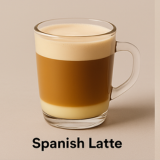
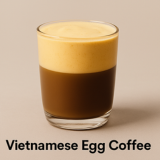
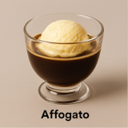
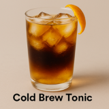

| Image | Product Name | Description |
|---|---|---|
|  | Spanish Latte | A rich mix of espresso and sweetened condensed milk, topped with steamed milk—smooth, bold, and slightly sweet. |
|  | Vietnamese Egg Coffee | A decadent treat made with robust coffee topped with a frothy, creamy blend of egg yolk and sweetened condensed milk. |
|  | Affogato | Espresso with equal parts steamed milk and thick foam. |
|  | Cold Brew Tonic | Similar to a latte but with a higher espresso-to-milk ratio; creamier. |